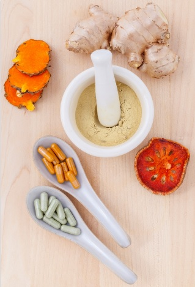

A transformação de uma planta em medicamento visa à preservação da integridade química e farmacológica da droga vegetal a fim de garantir a constância de sua ação biológica e/ou farmacológica e a segurança de sua utilização, além de valorizar o potencial terapêutico. Para atingir esses objetivos, a sua produção requer estudos prévios relativos a aspectos botânicos, agronômicos, fitoquímicos, farmacológicos, toxicológicos e de desenvolvimento de metodologias tecnológicas e analíticas.
O desenvolvimento de novos fármacos é um longo e dispendioso processo, que pode levar de dez a quinze anos de pesquisa e de desenvolvimento para ser concluído. Ao longo desse processo, a taxa de insucesso é muito alta. Dos 5.000 – 10.000 compostos inicialmente testados, 250 chegam aos ensaios pré-clínicos, apenas 5 alcançam os ensaios clínicos, e daí resulta a aprovação de uma única nova droga. (MONTANARI E BOLZANI, 2001).
Para compreendermos como ocorre a inserção do Brasil nesse processo, é importante conhecermos os quatro estágios da produção de medicamentos:
- O primeiro estágio envolve a identificação botânica, o estudo fitoquímico, os ensaios pré-clínicos e clínicos da espécie vegetal estudada e o desenvolvimento da formulação farmacêutica.
- O segundo estágio envolve a obtenção da matéria-prima e/ou insumos dos medicamentos. No caso dos medicamentos da biodiversidade de origem vegetal os insumos podem ser a droga vegetal (como exemplo: folha rasurada de Mikania glomerata) ou do fitofármaco (exemplo: morfina).
- O terceiro estágio envolve a produção de medicamentos propriamente dita. Neste estágio são utilizados processos físicos para a produção das formas farmacêuticas comercializáveis. No caso dos medicamentos da biodiversidade de origem vegetal teremos a produção dos fitoterápicos nas formas farmacêuticas de cápsulas, xaropes, tinturas entre outros.
- A quarta e última etapa envolve a comercialização e o marketing, que devem estar em acordo com a legislação vigente.
A produção brasileira tem se voltado para o terceiro estágio, produzindo os medicamentos a partir da matéria-prima e/ou insumos importados, sem transferência de tecnologia e para o quarto estágio voltado para comercialização dos medicamentos produzidos no Brasil ou importados.
A obtenção de fitoterápicos, quer seja em escala oficinal, hospitalar ou industrial, requer conhecimentos e habilidades específicas do ciclo de produção de medicamentos que deve ser aliado às normas que permitam alcançar o objetivo traçado: a qualidade total. A qualidade total é uma técnica administrativa que utiliza programas, ferramentas e métodos aplicado no controle o processo de produção de medicamentos para obter medicamentos de menor custo e melhor qualidade com o objetivo de atender as exigências e a satisfação dos consumidores.
 Marques e Souza relatam a experiência profissional de cinco anos em uma empresa farmacêutica brasileira que buscou o desenvolvimento de uma linha fitoterápica a partir da literatura científica. Clique aqui para ler o artigo "Pesquisa e desenvolvimento de fitoterápicos: Relatos de Experiência em Indústria Farmacêutica Nacional."
Marques e Souza relatam a experiência profissional de cinco anos em uma empresa farmacêutica brasileira que buscou o desenvolvimento de uma linha fitoterápica a partir da literatura científica. Clique aqui para ler o artigo "Pesquisa e desenvolvimento de fitoterápicos: Relatos de Experiência em Indústria Farmacêutica Nacional."
O artigo de Bassani e colaboradores (2013) trata da transformação de plantas medicinais em produtos com maior valor tecnológico agregado, o que representa uma estratégia que pode contribuir para o progresso da sociedade. Clique aqui para ler o artigo "Desenvolvimento Tecnológico de Produtos fitoterápicos."